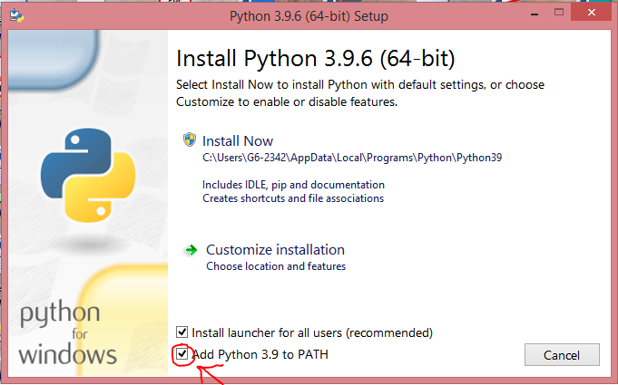

Retour au site de Ma vie virtuelle
Installer le module KEYBOARD
J'ai déjà installé des modules sur mon interpréteur python!
- Ouvrez le terminal ou l'invite de commande (pour ouvrir l'invite de commande, faites Windows+R puis entré cmd.exe et validez)
- Taper "pip install keyboard" et validez!
- C'est bon, c'est installé
Je n'ai jamais installé de module sur ma version de python!
(Windows)Installer pip
- Accédez à cette page
- Faites un clic droit sur la page en question puis, dans le menu déroullant, appuyer sur enregistrer sous et séléctionnez l'emplacemant où vous souhaiter téléchargez le fichier.
- Éxécutez le fichier get-pip.py (fichier que vous venez de télécharger)
Si vous en êtes capable, éxécutez le fichier dans le terminal ou dans l'invite de commande
- pip est installé!
(Mac OS/Linux)Installer pip
- Ouvrez le terminal
- Entrez "sudo apt install python3-pip" puis validez
- Entrez votre mot de passe d'utilisateur (durant l'écriture du mot de passe, le curseur ne bouge pas pour cacher votre mot de passe)
- Patientez...
- pip est installé
(Windows)Un WARNING en jaune est survenue durant l'éxécution du fichier get-pip.py!/Le fichier ne démarre pas ou plante au démarrage!
Si cela est survenue, cela veut dire que aucune version de Python n'est défini dans le PATH! Cette partie va vous aider à corriger ce problème!
Si cependant vous n'avez vous n'avez pas eu de WARNING en jaune, vous pouvez ignorez cette partie.
- Désinstallez Python
- Patientez...
- Python est désinstallé
- Lancez l'installateur Python (N'oubliez pas de le télécharger)
- Une fois l'installateur lancé, cochez la case "Add Python 3.9 to PATH"

- Puis lancez l'installation comme une installation classique et patientez...
- Votre version de Python est définie dans le PATH
(Tout système confondus)Installer virtualenv
Virtualenv sert à créer des environnements virtuels Python (et donc inclure les modules Python non-standarts)
- Ouvrez l'invite de commande ou le terminal
- Entré "pip install virtualenv"
- Virtualenv est installé
(Tout système confondus)Installer keyboard
On y est presque...Cette étape va installer le module KEYBOARD
- Ouvrez le terminal ou l'invite de commande (pour ouvrir l'invite de commande, faites Windows+R puis entré cmd.exe et validez)
- Taper "pip install keyboard" et validez!
- Keyboard est installé